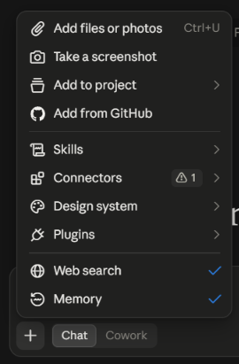
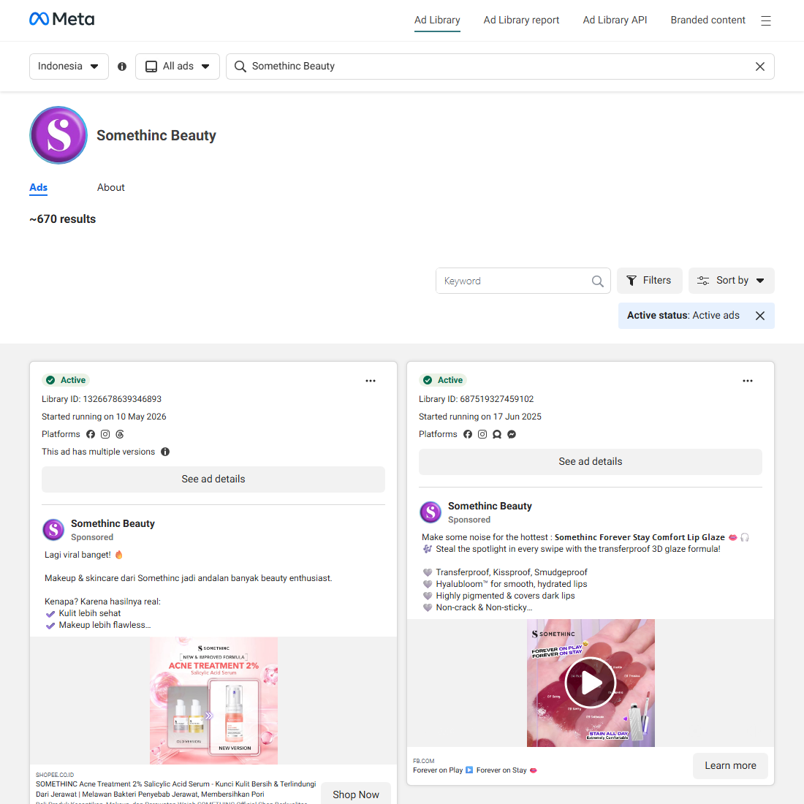
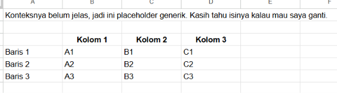

Free Guide · Competitor Research × Claude
Prices, claims, and the ads they're running right now, in one Google Sheet plus 3 ideas you can test straight away. 100% free tools, no paid extension.
You'll finish with:
It worked if: every row has a source link and a check date, and every test idea names the competitor ad it came from.
On Claude Pro? Claude in Chrome can read your tabs directly and speeds up steps 2 and 4. This guide doesn't need it; that extension is for paid plans only.
Choose the brands that sell most like you: same category, price range, and buyers. The biggest name in your category isn't always the most relevant one.
You should see: a list of 3 competitors and an empty sheet ready to fill.
You should see: a product table with price, main claim, and a source link on every row.
Watch out: Check the currency. In our test, Claude took dollar prices from a site's international version. If a competitor only sells on a marketplace like Shopee, Claude can't read the page. Open the shop, select all (Ctrl+A), copy, and paste the text into Claude.

Ad Library shows every ad currently running on Facebook and Instagram. Anyone can open it without logging in.
facebook.com/ads/library and choose your country.You should see: the brand's page with the number of active ads above the list, for example "~670 results".
Watch out: One brand can have several Pages, and many resellers use the brand name. Pick the one with the most followers and the official Instagram handle. Blank page or errors? Turn off your ad blocker for facebook.com.

Claude can't open Ad Library links because Meta blocks automated access. You can still copy the text.
You should see: the number of active ads, the 3 most-used angles, the longest-running ad, and where the ads send people.
Watch out: Ad Library doesn't show budgets or results. An ad that has run for a long time is a hint that it might be working, not proof.
You should see: one row per competitor, each column in its own cell, with source links and a check date.
Watch out: If Claude's opening sentence gets copied too, it lands in the first row. Start your selection at the table's column headers.

Checkpoint
You now know what your competitors are running. Those test ideas only pay off once they're turned into ads and tested every week. Email the Gwenchana team
Prompt A: Website data (Step 2, one competitor per message)
Search the web and read [COMPETITOR NAME]'s product pages on [COMPETITOR WEBSITE]. Take up to 5 main products.
For each product give: product name, price in local currency, main claim, and the URL of the source page.
Rules:
- Use the site version for my country. If the price is in another currency, name the currency and don't convert it.
- Don't guess. If a price or claim isn't on the page, write "not found".
Show it as a table.Prompt B: Ad analysis (Step 4, one competitor per message)
Below is text from Meta Ad Library for the advertiser [COMPETITOR NAME], active ads in my country. Analyze only this text. Don't guess.
1. Number of active ads (the "results" number above the list).
2. The 3 most frequent angles or messages. For each, give one example line from an ad and its Library ID.
3. The longest-running ad: Library ID and its "Started running on" date.
4. Where the ads send people (website, marketplace, WhatsApp, and so on) and the most used CTA.
Remember: Ad Library shows no budget or results. Describe long-running ads as a hint, not proof.
[PASTE AD LIBRARY TEXT HERE]Prompt C: Competitor Snapshot and test ideas (Step 5)
Combine all results in this chat into one Competitor Snapshot table, one row per competitor, with these columns:
Competitor | Main products and prices | Main claim | Active ads | Top ad angles | Longest-running ad (date) | Where ads send people | Source links | Check date
Check date: [TODAY'S DATE].
After the table, write 3 gaps the competitors leave open and 3 ad test ideas for my brand, [YOUR BRAND], which sells [YOUR PRODUCT]. Each idea must name the competitor and the Library ID of the ad it's based on.
Start your answer with the table, no opening sentence.Marketplace shops, Ad Library, and sites built with JavaScript often can't be read by Claude. Open the page yourself, select all, copy, and paste the text into Claude. If the text is messy, upload a screenshot with + > Add files or photos.
You searched a keyword instead of picking an advertiser. Type the brand again and pick it under Advertisers. Check the follower count and the official handle.
Long pages and many competitors in one chat use up the limit fast. Send one competitor per message, turn Web search off while pasting text, and wait for the reset. On the Free plan, limits reset every five hours.
Your snapshot shows which angles competitors use and which gaps you could fill. What a sheet can't do: turn those ideas into creative, test them every week on a controlled budget, and read the results with tracking you can trust.
Gwenchana turns research like this into Meta Ads campaigns that get tested every week, starting from the Starter tier.
Not advertising on Meta yet, or still validating your product? Run this research first and repeat it monthly. Over the next week we'll email you prompts for reading competitor pricing and promos, 7 deeper research prompts, and a creative brief template built from competitor ads.
Want to talk first? Email info@gwenchana.digital with your brand and the ads you're running.
Email Gwenchana about Meta AdsChecked on September 28, 2026. Meta and Claude change their screens often. If something looks different, start with the quick fixes.